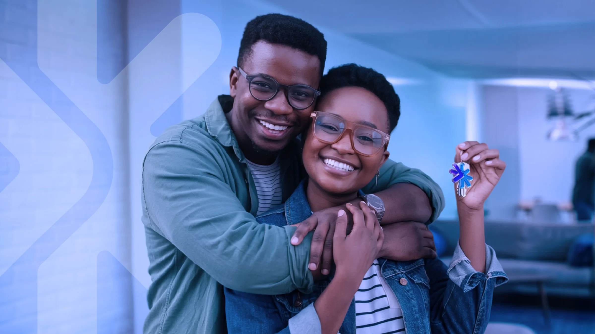
Inspire Seguros
Há mercados onde todas as marcas se parecem por escolha. Seguros e consórcios é um deles. Os nomes se aproximam, as paletas se repetem, e a promessa de confiança é dita do mesmo jeito por quase todo mundo. Estar nesse setor com uma marca comum não é ser discreto. É desaparecer.
A Inspire chegou a esse ponto. Uma operação de seguros e consórcios em São José dos Campos, com o negócio já de pé, base de clientes formada e atendimento funcionando. O que não acompanhava esse estágio era a forma como a marca se apresentava. Ela ainda dividia o mesmo espaço visual de todo o resto, sem nada que a separasse, sem nada que dissesse quem ela já era.
O trabalho partiu daí. Não de uma referência do mercado, nem do atalho de se aproximar da líder do setor para herdar credibilidade emprestada. Partiu do que a Inspire tinha de próprio. A identidade foi construída em torno de um sistema visual que se sustenta sozinho, do cartão à fachada, sem perder consistência em nenhum ponto de contato.
O resultado tirou a Inspire do bloco onde o setor inteiro se confunde. Uma marca que não pede credibilidade. Sustenta a própria.
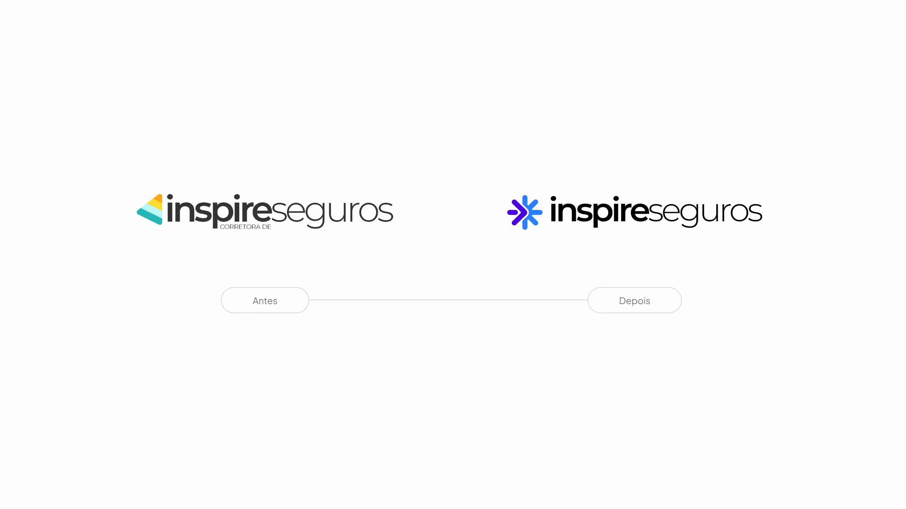
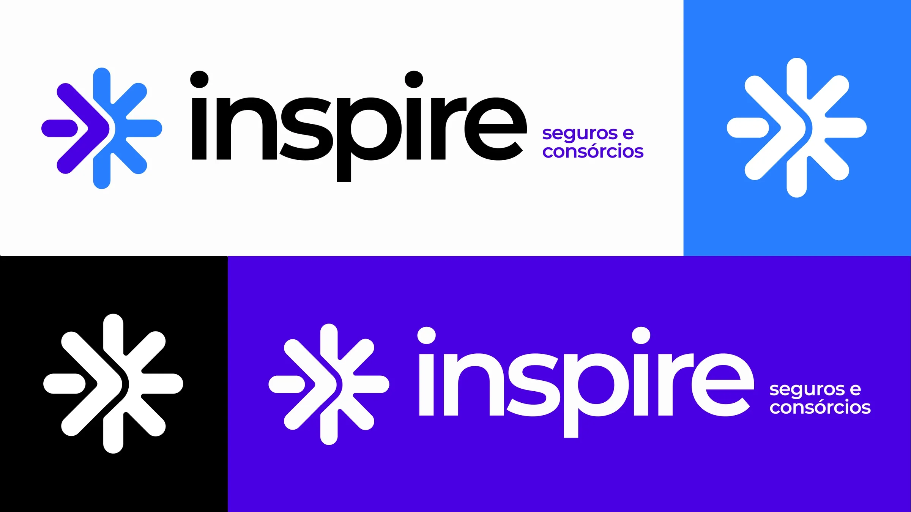
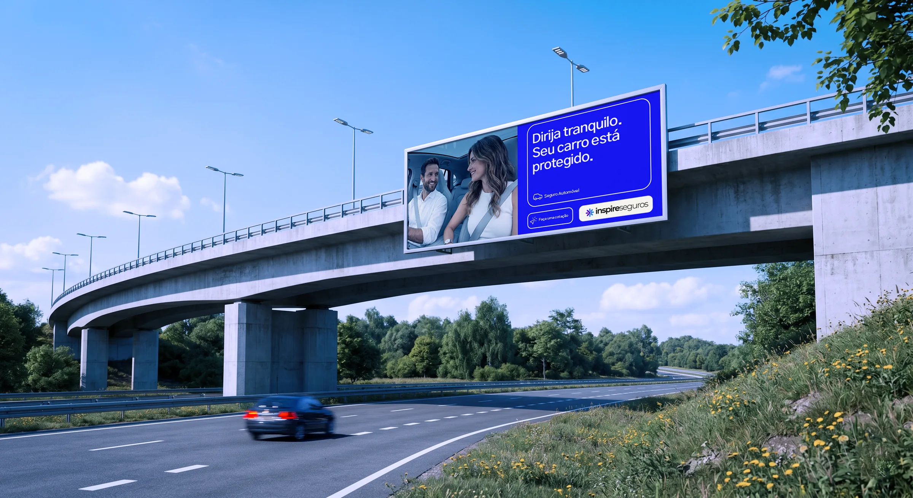
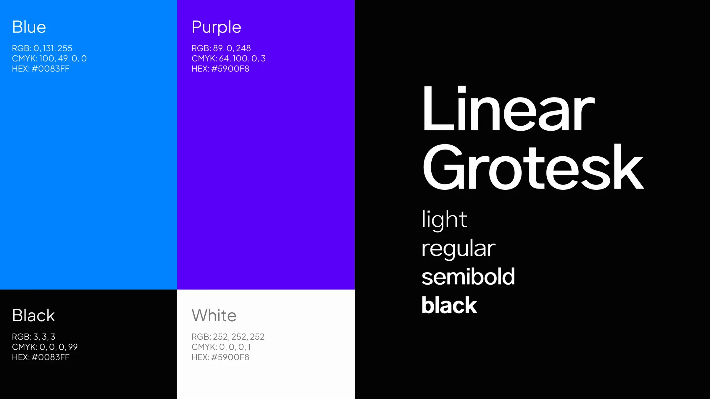
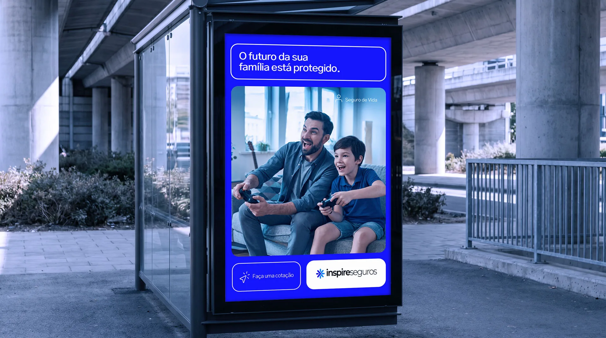
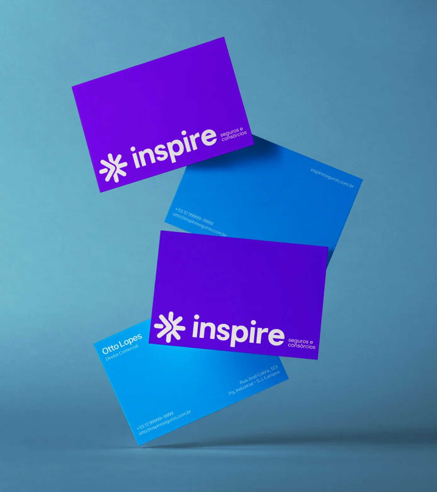
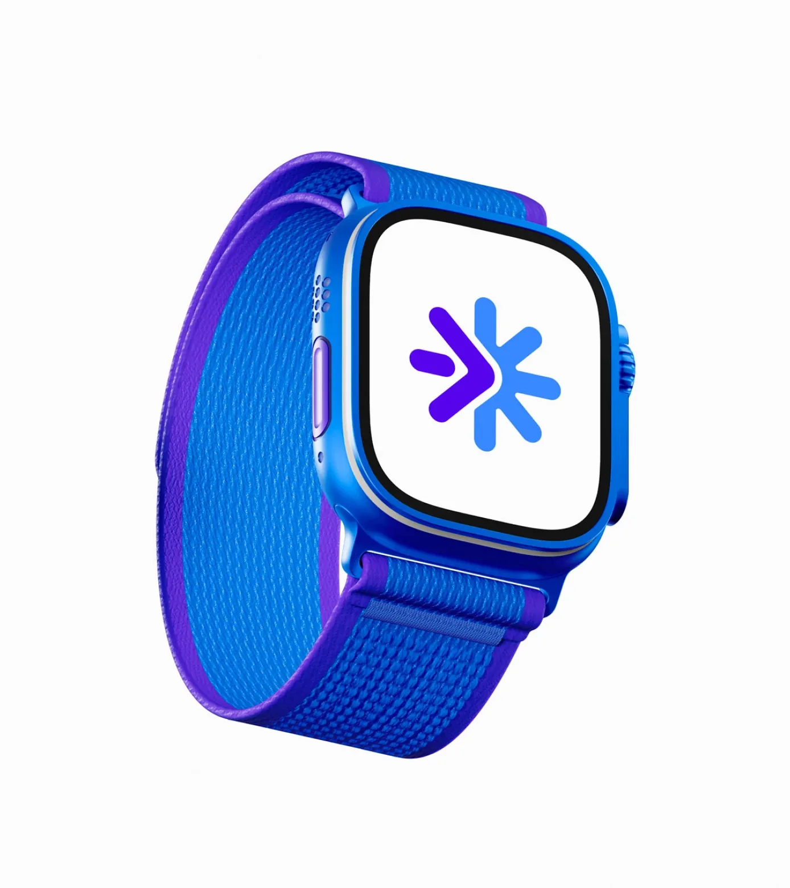
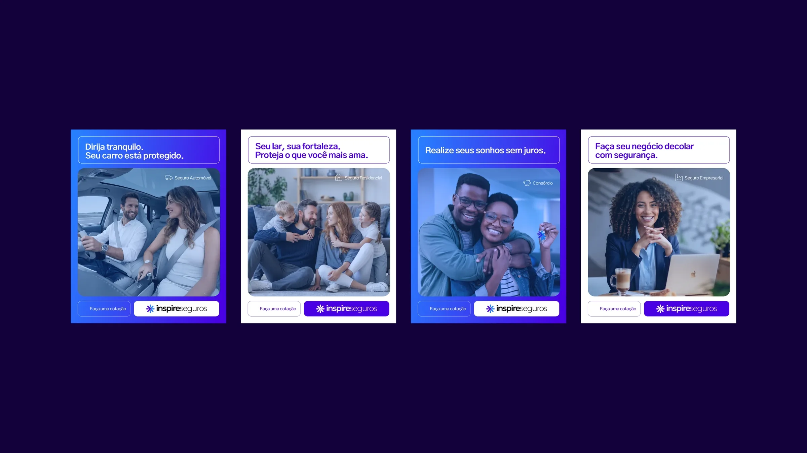
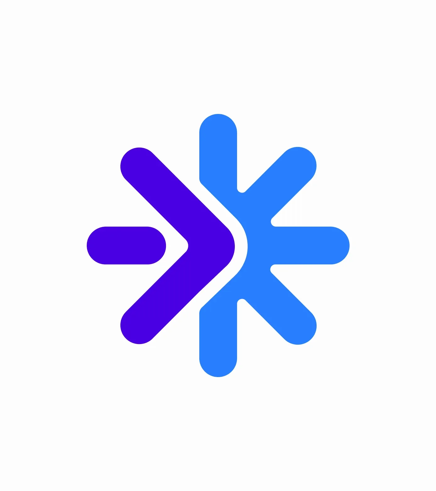
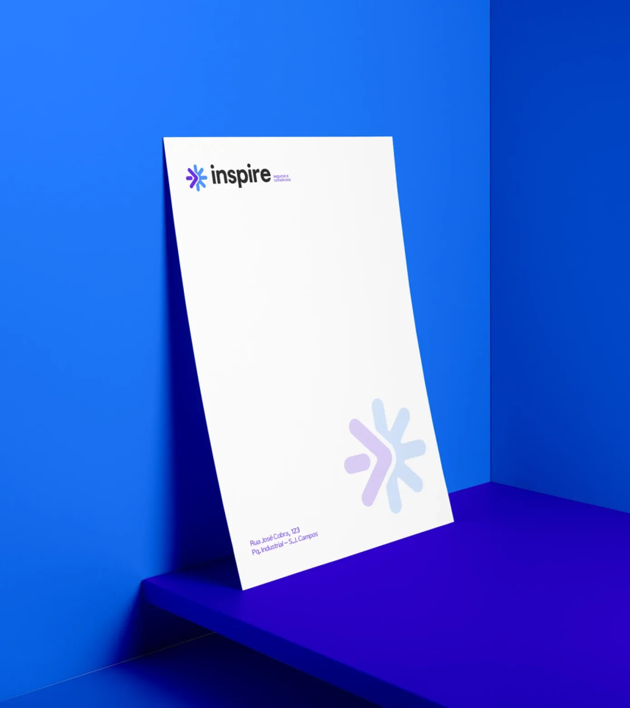
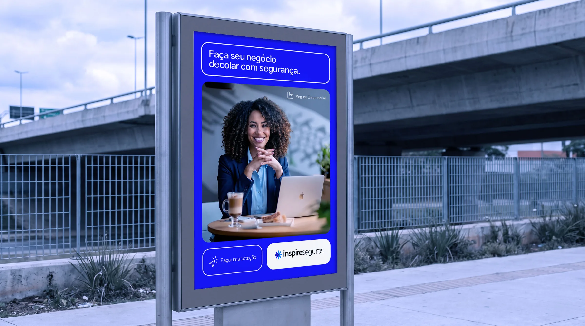
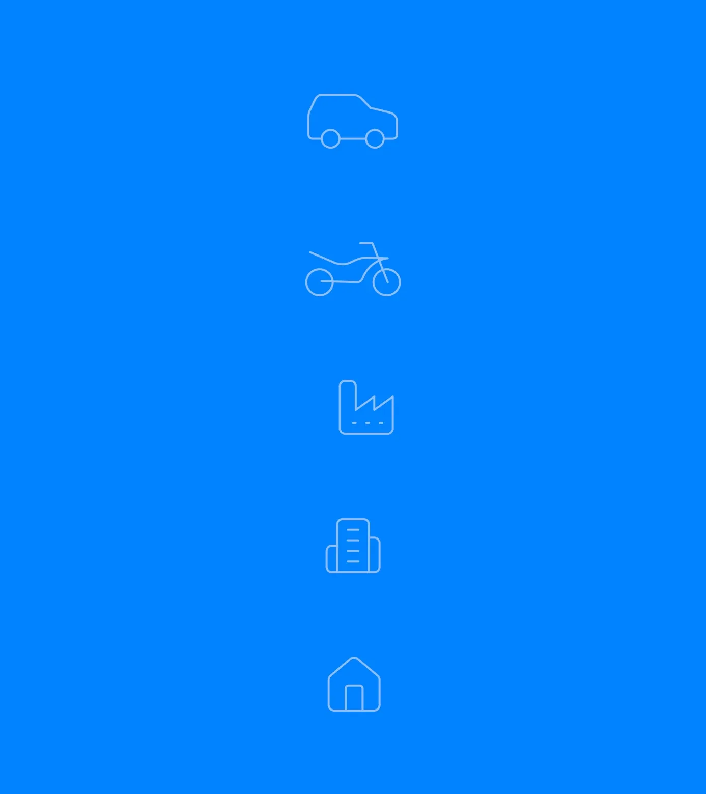
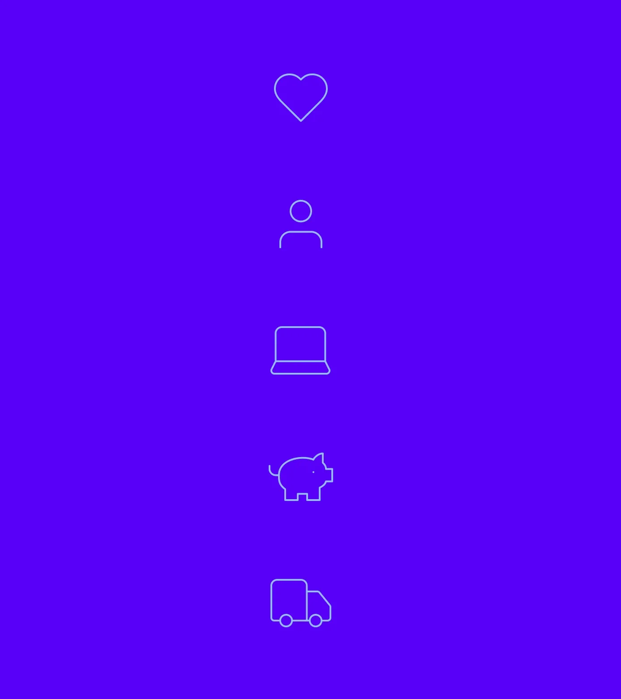
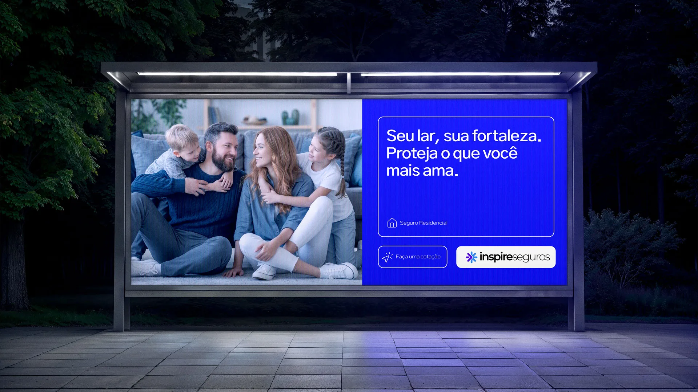